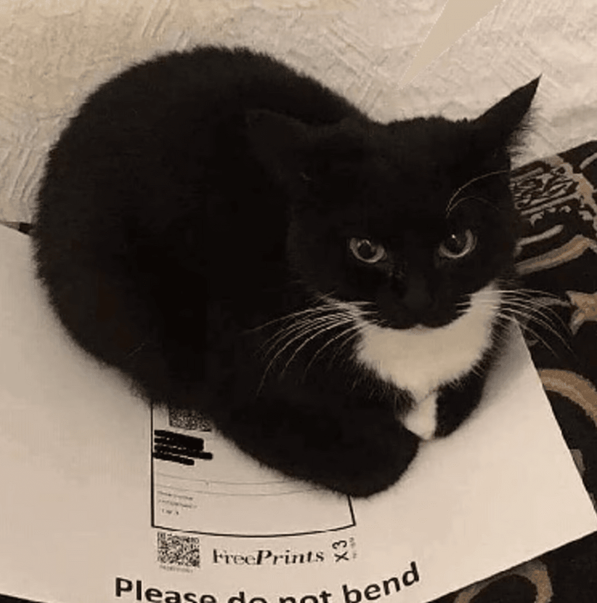

Jhon Anderson Denzel Castillo Vicente
Estudiante del curso de programacion
Intereses
.Uno de mis intereses tecnologicos es sobre como
funcinan y como se desarrollan las aplicaciones
ya sea de escritorio o movil.
.Otro de mis intereses es sobre como usar la
tecnologia para optimizar recursos, tiempos
y en general hacer todo tipo de proceso de manera mas fluida.
